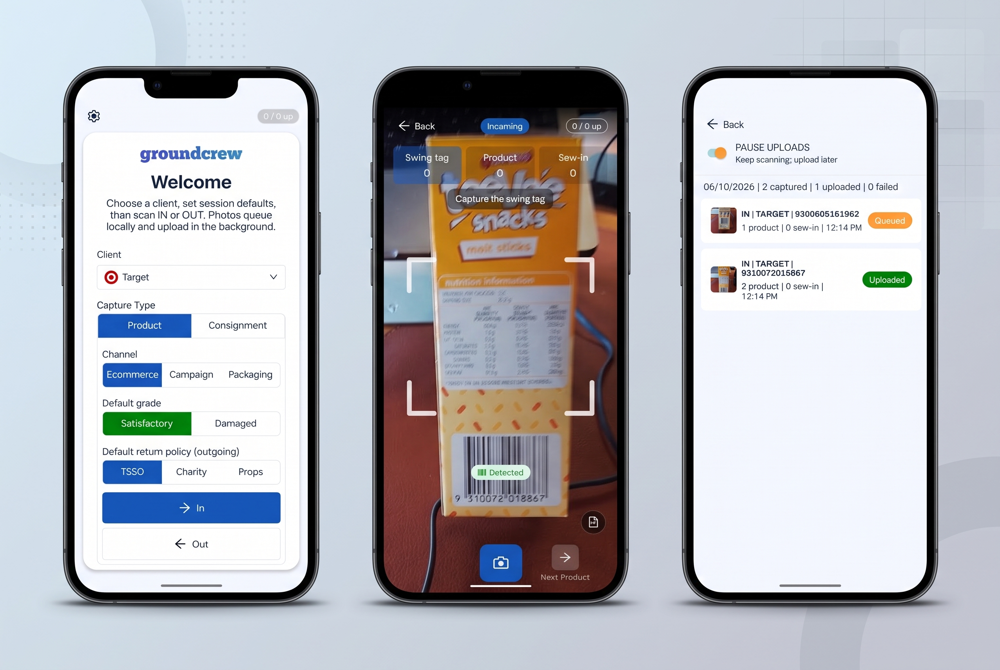
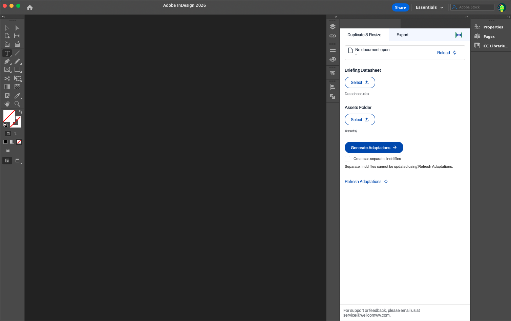
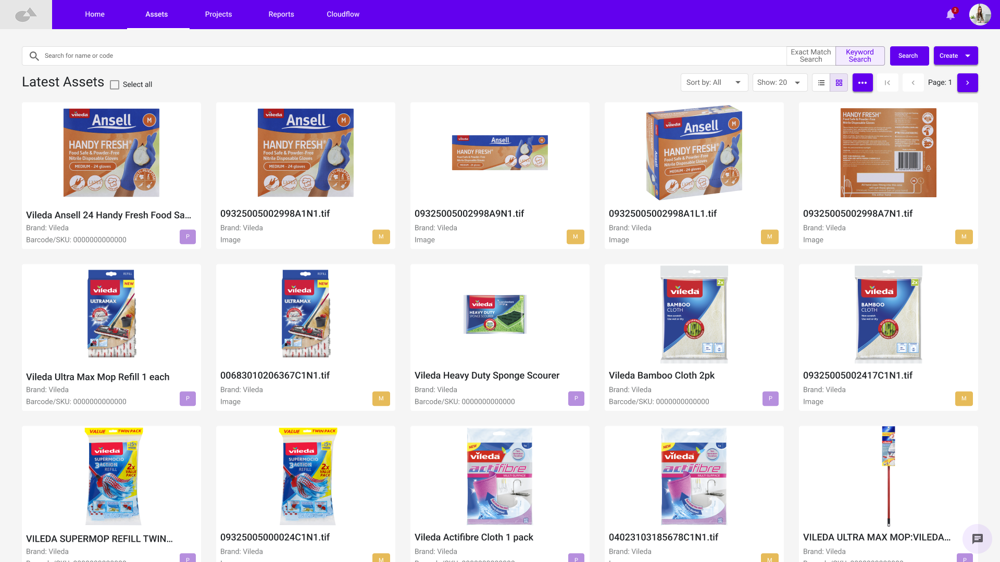
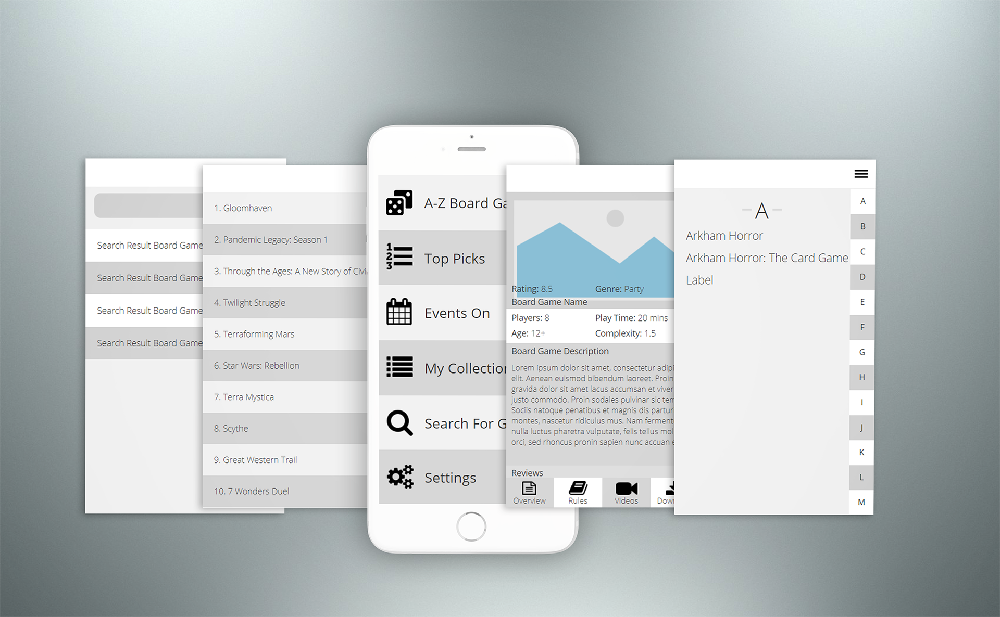
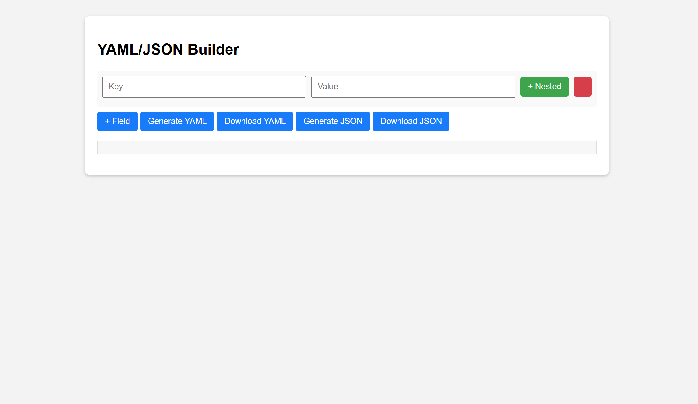

About Me
I am a hybrid UI/UX specialist and front-end developer passionate about creating accessible, intuitive and highly functional digital tools. I own the full product lifecycle, from user research and journey mapping to wiring up coding high-fidelity prototypes. Having spent years building complex enterprise tools, SaaS products and workflow automation plugins, I believe the best user experiences are built on a foundation of robust design tokens and systemic engineering. I love solving real-world operational problems through thoughtful and iterative design.
Case Studies
Product Swing Tag Scanning App
A mobile application that enables in-house teams to capture product data from swing tags.

Adobe Indesign Plugin
Designed and developed an internal plugin to streamline production workflows and reduce manual effort.

Project Marquee
Redesigning a legacy SaaS platform to improve usability, reduce friction, and modernize its UI while aligning with user expectations.

Project Board Game
A self-initiated UX case study to improve how rulebooks are consumed in digital format through audio, text, and video, with flexible learning formats and an intuitive design.

Internal Tooling (JSON/YAML Template)
Created a form-based UX improvement for developers editing structured data files. Reduced error rate and improved efficiency by simplifying the process and guiding input.

Contact
Reach out via amy.whitfield.92@gmail.com or connect on LinkedIn.